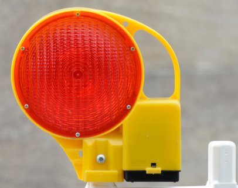
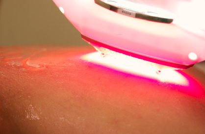
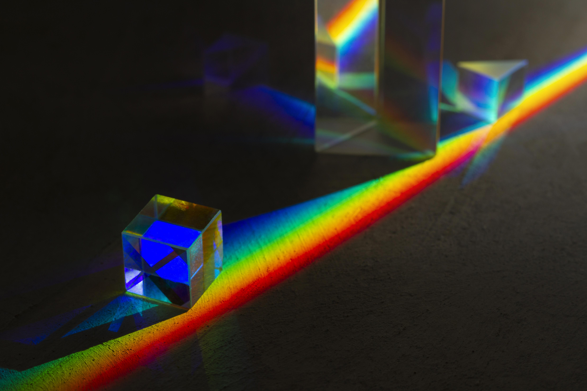
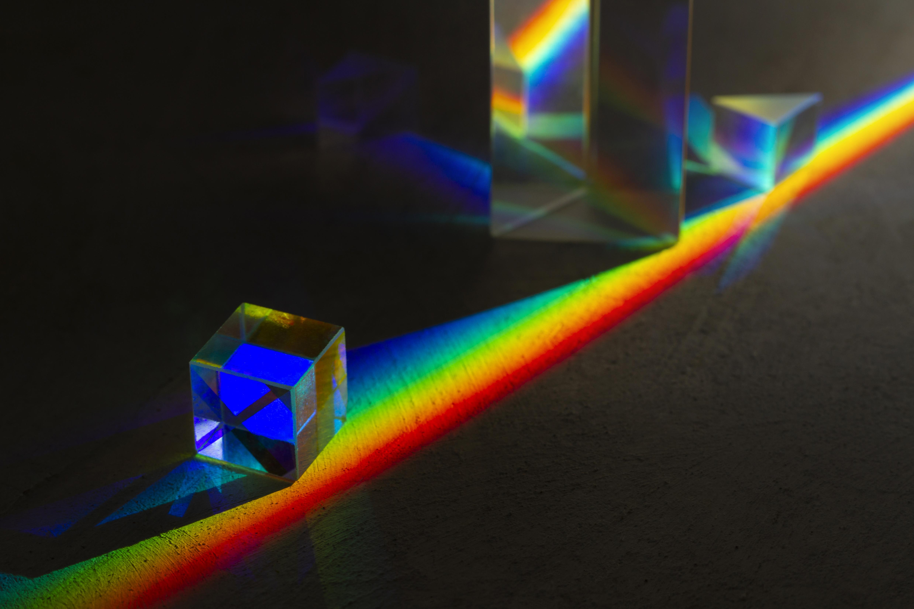

Ondas de Luz visível
- Definição:A radiação visível é uma forma de radiação eletromagnética que é visível ao olho humano, com comprimentos de onda variando de 40 cm a 70 cm. É considerada não ionizante.
- Frequência:A frequência da radiação visível encontra-se entre o infravermelho e o ultravioleta, variando de aproximadamente 4 × 1014 Hz a 8 × 1014 Hz.
- Aplicação:Usada na iluminação, fotografia, comunicação óptica, microscópios ópticos, luz azul para fototerapia (icterícia neonatal), luz de fibras ópticas (endoscopia), laser de luz visível (cirurgias oculares e dermatologia), lâmpadas e iluminação LED, displays e telas (TVs, computadores, celulares), sinalização de trânsito (semáforos e sinais de alerta), leitores de códigos de barras, espectrofotômetros de luz visível (análise de substâncias), sistemas de inspeção por imagem (controle de qualidade), luzes de advertência e segurança e tecnologia de impressão (alinhamento de cores e qualidade)
- Efeito:A radiação visível permite a percepção de cores e é essencial para a visão humana.


 
